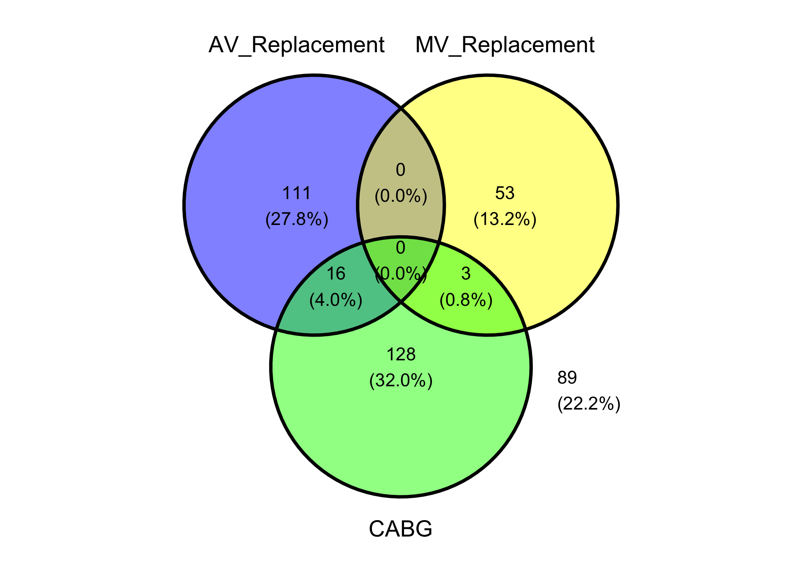
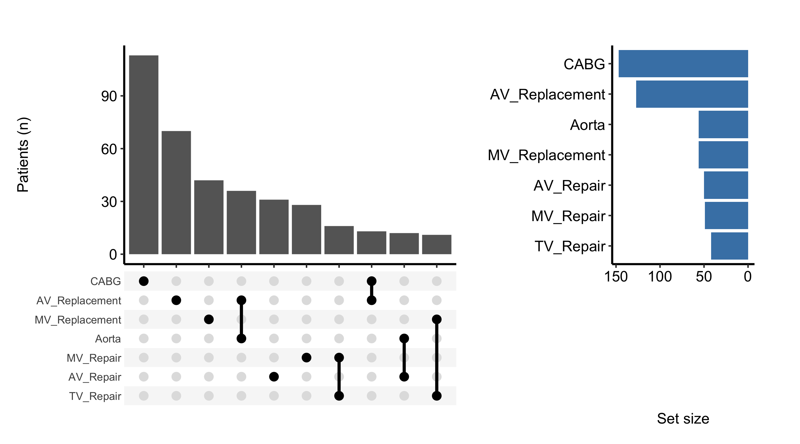
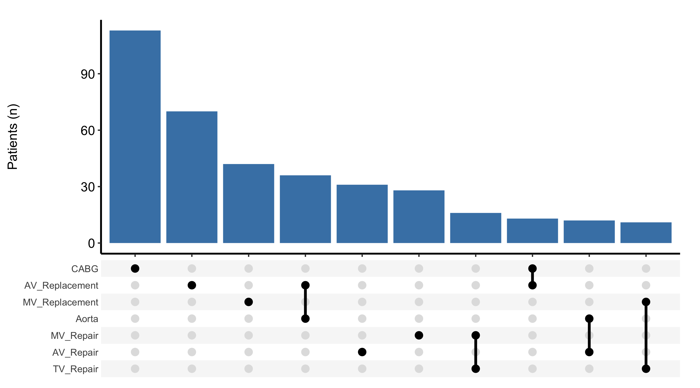
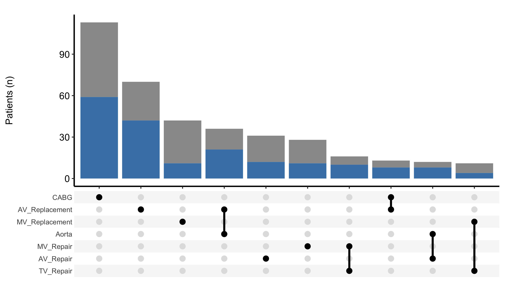

venn_dta <- sample_upset_data(n = 400, seed = 42)
plot(
hv_venn(venn_dta, sets = c("AV_Replacement", "MV_Replacement", "CABG")),
set_name_size = 5
)
To show non-distinct groups and understand overlapping groupings, we turn to VENN diagrams, and UpSet plots. The general rule to show no more than four groups in VENN diagrams. If there are more than four groups, we look at UpSet Plots.
Reach for a set-membership figure whenever a patient can belong to more than one group at once and you want to show how those groups overlap. The classic cardiac-surgery case is concomitant procedure: a single operation might be an aortic valve replacement, or a valve replacement plus a CABG, or all three of a valve replacement, a CABG, and an aortic repair. The question is not “how many had each procedure” (a bar chart answers that) but “which combinations actually occur, and how often.”
The Venn diagram is the familiar answer, and for two or three sets it is the right one: overlapping circles, the eye reads the intersections directly. The trouble is that it does not scale. At four sets the diagram needs ellipses and already strains; past four it stops being readable, because the number of distinct regions grows faster than a flat drawing can lay them out cleanly.
That is where the UpSet plot takes over. Instead of drawing every region as a patch of a circle, it lists each observed combination as a column and draws a bar for how many patients fall in it, with a matrix of filled and empty dots below showing which sets that column represents. It reads like a bar chart with a key, and it scales cleanly to seven sets or more.
For two or three overlapping groups, a Venn diagram is still the clearest display: the reader sees the intersections without a legend. Keep it to four sets at the most. The moment you find yourself reaching for a fourth or fifth circle, switch to the UpSet plot below, which is built to carry that load.
hv_venn(), from hvtiPlotR (Ehrlinger 2026), builds one from the same kind of set-membership data the UpSet plot uses: pass the data frame and the columns to treat as sets, then plot(). We pick three procedures that can co-occur. A Venn is coordinate-free, so we do not add a house theme — plot.hv_venn() styles the diagram itself, and theme_hv_manuscript() would only paste spurious x/y axes back onto it.
venn_dta <- sample_upset_data(n = 400, seed = 42)
plot(
hv_venn(venn_dta, sets = c("AV_Replacement", "MV_Replacement", "CABG")),
set_name_size = 5
)
Each region carries its patient count and percentage. The empty replacement-on-replacement overlap (0) is the clinically expected finding — patients rarely have both valves replaced in one operation — while CABG overlaps both. Past three or four sets the circles stop separating cleanly, which is the cue to switch to the UpSet plot.
hv_upset(), from hvtiPlotR (Ehrlinger 2026), builds an UpSet diagram via ggupset::scale_x_upset() to visualise surgical procedure co-occurrences or any set-membership data. Where a Venn diagram breaks down past three or four sets, UpSet scales cleanly to seven or more.
plot.hv_upset() returns a ggplot when set_size = FALSE, or a patchwork composite of an intersection-bar plot plus a set-size sidebar when set_size = TRUE (the default). For the bare ggplot path, themes apply via +; for the patchwork path, use patchwork’s & operator to theme every sub-panel.
sample_upset_data() returns a binary indicator matrix: one column per procedure, one row per patient, with 1 indicating the procedure was performed. Pass the column names to intersect to define the set-membership axes. Run colSums() first to confirm the marginal counts; those totals are exactly what the set-size sidebar reports, so seeing them now makes the finished figure easy to sanity-check.
sets <- c("AV_Replacement", "AV_Repair", "MV_Replacement", "MV_Repair",
"TV_Repair", "Aorta", "CABG")
upset_dta <- sample_upset_data(n = 400, seed = 42)
head(upset_dta) AV_Replacement AV_Repair MV_Replacement MV_Repair TV_Repair Aorta CABG
1 FALSE FALSE FALSE TRUE FALSE FALSE FALSE
2 FALSE FALSE FALSE TRUE FALSE FALSE FALSE
3 FALSE FALSE FALSE FALSE FALSE FALSE TRUE
4 FALSE TRUE FALSE FALSE FALSE FALSE FALSE
5 FALSE FALSE TRUE FALSE TRUE FALSE FALSE
6 TRUE FALSE FALSE FALSE FALSE FALSE TRUEcolSums(upset_dta)AV_Replacement AV_Repair MV_Replacement MV_Repair TV_Repair
127 50 56 49 42
Aorta CABG
56 147 hu <- hv_upset(upset_dta, intersect = sets)The default plot shows intersection bars (the ten most frequent combinations) with a set-size sidebar on the right. Because set_size = TRUE is the default, plot() returns a patchwork composite, so theme it with & to reach both sub-panels at once.
plot(hu) &
theme_hv_manuscript()
An UpSet plot is read from the top down, then from left to right. Look for:
colSums() printed above. A set with a large margin but few tall intersection bars is one that spreads thinly across many rare combinations.The intersection bars are a standard geom_bar(), so you can recolour them with the bar_fill argument. Setting set_size = FALSE drops the sidebar and returns just the intersection-bar ggplot, which you then finish with the usual +.
plot(hu, bar_fill = "steelblue", set_size = FALSE) +
ggplot2::labs(y = "Patients (n)") +
theme_hv_manuscript()
To split each intersection by a grouping column, pass fill_col. The bars are then stacked by that column’s levels, which lets you ask whether the mix of procedure combinations shifted over time. Combine it with scale_fill_manual() to assign the colours explicitly.
upset_dta$era <- ifelse(seq_len(nrow(upset_dta)) <= 200, "Early", "Recent")
hu_era <- hv_upset(upset_dta, intersect = sets)
plot(hu_era, fill_col = "era", set_size = FALSE) +
ggplot2::scale_fill_manual(
values = c("Early" = "grey60", "Recent" = "steelblue"),
name = "Era"
) +
ggplot2::labs(y = "Patients (n)") +
theme_hv_manuscript()
set_size = TRUE (the default) the plot is a patchwork composite, and + theme_hv_manuscript() styles only one sub-panel, leaving the sidebar mismatched. Use & for the composite and + only when you have set set_size = FALSE.